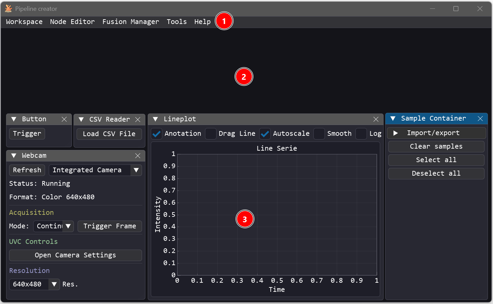
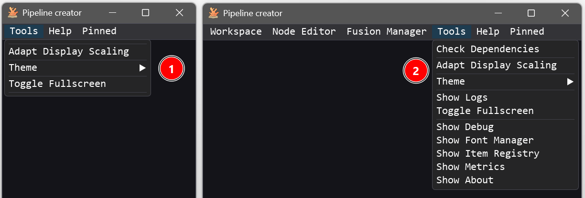
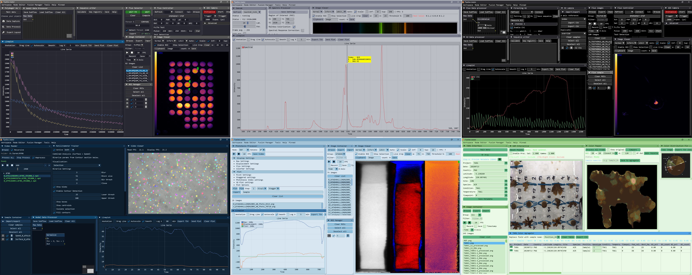
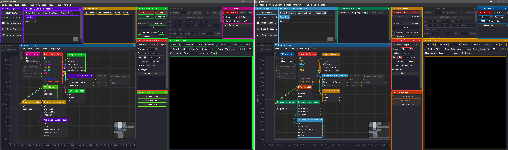
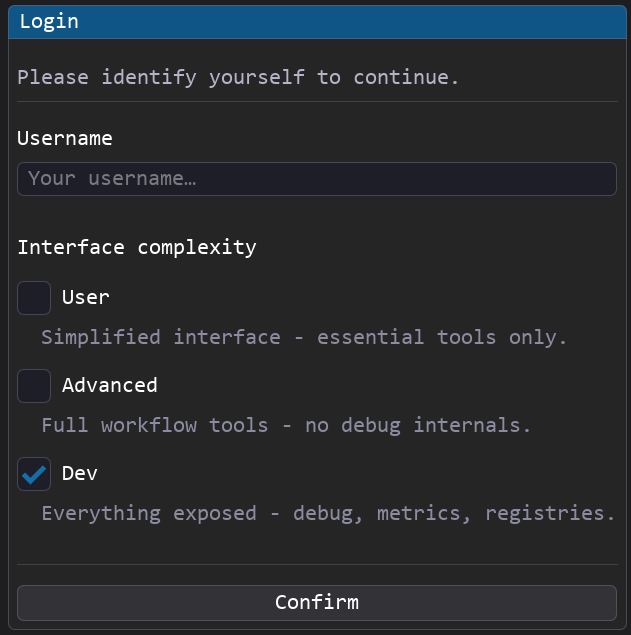
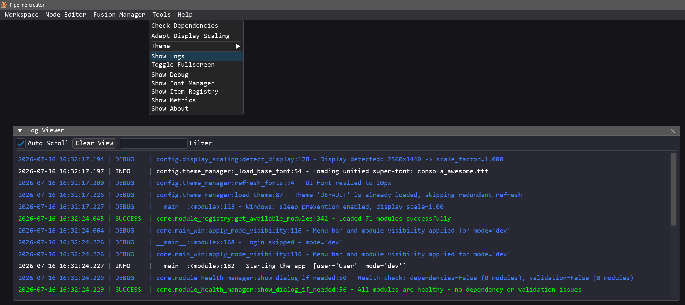

Main Window Guide¶
The Main Window is the primary container of the application. It hosts the menu bar that gives access to all workspace management tools, visual editors, debugging utilities, and system settings.
Overview¶
When Pipeline Creator starts, the Main Window occupies the full viewport and acts as a top-level host for all other panels. It contains:
- A menu bar at the top.
- A transparent background canvas
- Modules float on top of it.

Menu Bar¶
The active privilege mode has a direct impact on the availability and content of the different menus.

The following table summarizes all options in the menu bar along with their required privilege levels:
| Option / Menu | Privilege | Description |
|---|---|---|
| Workspace | Advanced, Dev | Allows loading and exporting pipelines or window layouts (views). |
| Node Editor | Advanced, Dev | Opens the Node Editor. |
| Fusion Manager | Advanced, Dev | Opens the Fusion Manager. |
| Tools | User, Advanced, Dev | Access theme controls, display scaling, system debug/diagnostics panels, and the Module Manager (Advanced and Dev modes only). |
| Help | User, Advanced, Dev | Access system documentation and the Tutorial Manager. |
| Pinned | User, Advanced, Dev | Displays the list of currently pinned modules. |
Themes¶
Pipeline Creator ships with multiple color palettes. Switch between them via Tools → Theme.

Themes are defined in config/theme_colors.py as Python dictionaries. Any dictionary with an ALL_CAPS name is automatically discovered and listed as an available theme.
# Example palette definition in theme_colors.py
MY_CUSTOM_THEME = {
"window_bg": (20, 20, 30, 255),
"title_bar": (40, 40, 60, 255),
"button": (70, 130, 180, 255),
"button_hover": (100, 160, 210, 255),
# ... more color keys
}
The active theme name is persisted in config.json under UI.theme_name and loaded on the next startup.
Colorblind Support¶
Pipeline Creator includes colorblind-friendly palette variants. This colorization is especially helpful in the Node Editor, where data flows, individual nodes, and their corresponding windows are color-coded to make the pipeline easier to understand. These color schemes can be adjusted to suit different types of color blindness.

Set UI.colorblind_type in config.json to one of:
| Value | Description |
|---|---|
"none" |
Default palette (no adjustment) |
"deuteranopia" |
Green-blind adjusted colors |
"protanopia" |
Red-blind adjusted colors |
"tritanopia" |
Blue-blind adjusted colors |
Fusion Manager¶
The Fusion Manager is a visual helper panel that allows you to organize and clean up your workspace by combining multiple independent module panels into a single, unified tabbed window.
For more details on the layout system, see the dedicated Fusion Manager Guide.
Accessing the Fusion Manager¶
- Ensure the application is running in Advanced or Dev privilege mode.
- In the main menu bar, click Fusion Manager to open its control window.
Drag-and-Drop Docking¶
To combine floating windows: - Locate the modules you wish to combine in the Fusion Manager table. - Click and hold the module's button in the Module column. - Drag and drop it onto another module's button within the same column. - The dragged module's standalone window will automatically hide, and its controls will be embedded as a new tab inside the target module's window. - Nested Merging: Hierarchical docking is fully supported. You can merge a module into another module, and then merge that container module into a third module (e.g., merging A into B, and then B into C), creating nested, multi-level tabbed groups.
Quick Controls¶
Inside the Fusion Manager table, you can interact with the module buttons: - Left-Click a button to bring that module's window to focus. - Right-Click a button to trigger an automatic resize on that module's window.
Undocking / Restoring Windows¶
To split a module back out of a tab group: - Locate the merged module in the Fusion Manager list. - Click the Restore button in the Actions column. - The module will immediately be detached and restored as its own standalone floating window.
Privilege Modes¶
Privilege modes control which UI features are accessible.
Whether the login screen is displayed at startup is controlled by the "Login" section in config.json:
- "enabled": Set to true to display the login dialog on startup, or false to skip it.
- "default_mode": Specifies the fallback privilege mode ("user", "advanced", or "dev") when the login dialog is disabled.
The login dialog can also be reopened at any time via the shortcut Ctrl + Shift + L.
When a user logs in, their username is stored in the global state container app_state.py (via the app_state.username attribute). This allows any module to retrieve the current username if needed (e.g., for user-specific logs, paths, or actions).

Mode changes automatically:
- Hide/show menu items
- Call update_permission() on all active module instances
- Apply the mode's saved view layout
System Tray¶
When Window.minimize_to_tray is true in config.json, the Minimize to Tray menu item appears. Clicking it hides the main window and places a tray icon. Right-clicking the tray icon shows a context menu to restore or quit.
Log Viewer¶
Pipeline Creator includes an in-app Log Viewer window that captures and displays real-time application logs. This is extremely helpful for monitoring background processes or debugging custom modules.
- Ensure the application is running in Advanced or Dev privilege mode.
- In the main menu bar, go to Tools and select Show Logs.

Features of the Log Viewer¶
- Auto Scroll: Automatically scroll to the latest log entries when checked.
- Clear View: Clear the current logs displayed in the viewer window.
- Filter: Enter a search query to filter logs dynamically in real time.
- Color-Coded Severity: Logs are colored based on their severity level (e.g. TRACE, DEBUG, INFO, SUCCESS, WARNING, ERROR, CRITICAL).